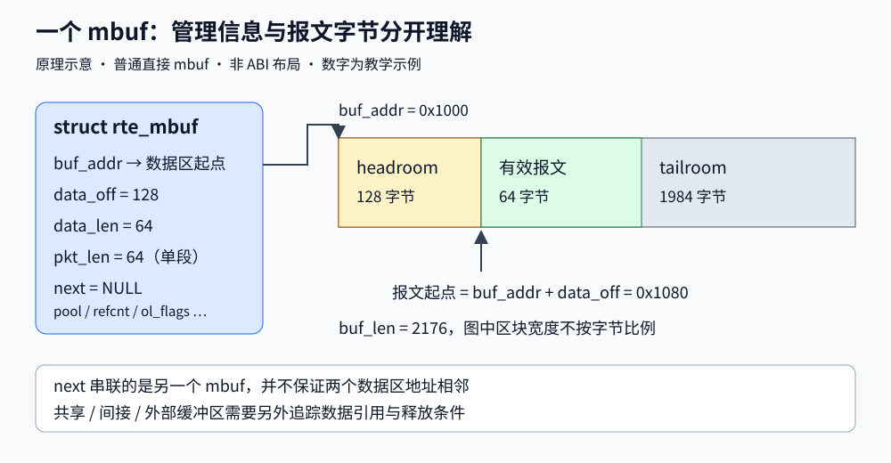

一个包怎样从网卡
进入程序
描述符、DMA、mbuf 与 RX burst
执行 rte_eth_rx_burst() 时，报文字节通常已经被网卡写进内存了。
那么这一行代码到底还在做什么？从这个问题出发，把接收路径中的每次交接都追到具体对象上。
01 从一个看似简单的问题开始
网线里到达的是字节，C 程序拿到的却是 struct rte_mbuf *。这中间是谁准备了内存，谁把字节放进去，谁保证现在已经可以读？
先设想一个笨办法：每来一个包，就叫醒 CPU，由 CPU 申请空间、搬运内容，再通知业务代码处理。它容易理解，但把申请、唤醒和协调都压在了包到达的那一刻。包越小、到达越密，这些与业务无关的动作就越难摊薄。现代网卡早已能用 DMA（设备直接访问内存）搬运数据，内核网络驱动也使用描述符和批处理；DPDK 的关键问题，是怎样把设备收发路径直接接到用户态的处理循环，并让这条循环的成本更可控。
本章从典型物理网卡的收包模型出发：程序提前交给驱动一批可用缓冲区，驱动把地址写进网卡能理解的描述符；网卡把包写入其中一块内存并报告完成；驱动把结果整理成 mbuf，应用得到它的指针。理解这句话的难点不在名称，而在同一块内存的使用权怎样随时间变化。
这里的“所有权”表示谁负责后续使用、移交和释放，通常没有一个通用的 owner 字段替你检查。C 指针可以随意复制，责任却不会因此自动复制。图里分开的对象也未必各占一块独立分配的内存：我们先分清职责，再讨论具体布局。
先预测：CPU 暂停几十微秒，网卡还能收包吗？
如果设备已经启动，队列里还有提交给网卡的有效接收缓冲区，网卡可以继续 DMA。CPU 暂停不等于网卡暂停。但可用位置是有限的；CPU 不处理完成结果、不补充缓冲区，余量用完后就可能接不住后续流量。具体丢弃位置、计数器和流控效果由设备决定。这个推理已经说明：描述符环提供的是有限缓冲余地，不能把持续不足的处理能力变成无限吞吐。
02 把三种容易混淆的对象拆开
可以暂时把描述符看作设备的工作单，把数据缓冲区看作工作单指定的存放位置，把 mbuf 看作软件给这份数据建立的档案。类比到这里就够了：实际运行时，描述符是设备规定格式的内存结构，数据是字节，mbuf 是 DPDK 的 C 结构，它们不能互相强制转换。
| 对象 | 要解决的问题 | 典型内容与读写者 |
|---|---|---|
| RX 描述符 | 设备往哪里写，结果是什么 | 驱动准备 DMA 地址；设备回写完成状态、长度等。字段布局由硬件和驱动规定 |
| 数据缓冲区 | 真正的包字节放在哪里 | 接收时由 NIC DMA 写入；完成后 CPU 读取以太网头、IP 头和负载 |
struct rte_mbuf | 软件如何定位、解释和管理数据 | 数据起点、长度、分段关系、引用计数、所属内存池及卸载元数据 |
| PMD 的软件记录 | 这个描述符对应哪个 mbuf | 由驱动保存关联。例如 ixgbe 的 sw_ring；它不是另一份包内容 |
为什么不能让应用直接使用描述符？因为不同网卡的工作单不一样，硬件完成状态也不是通用协议解析结果。PMD，也就是轮询模式驱动，把这些差异收在设备实现里；应用只看到统一的 mbuf 接口。名称里有“驱动”，不表示它一定另起线程：通常是应用线程调用 rte_eth_rx_burst()，同一个线程接着执行该设备的 PMD 收包函数。接口内部会选择已注册的收包回调。查看 ethdev 接口与回调分派
一根指针，至少包含两层定位

m 指向 mbuf 管理结构；第一段包字节的 CPU 地址是 (char *)m->buf_addr + m->data_off。假设某个示例缓冲区起点为 0x1000，data_off = 128，那么第一字节在 0x1080。如果缓冲区容量是 2176 字节，本段数据长 64 字节，剩余尾部空间就是 2176 − 128 − 64 = 1984 字节。这些数字仅用于计算，不是所有配置的固定布局。
前面预留的 headroom 让某些增加报文头的操作可以向前移动起点，避免搬动原有负载；它能否装下新头仍受容量限制。data_len 只描述当前段，pkt_len 在首段描述整包，next 把多段串起来。把 pkt_len 当成第一段连续可读长度，是一种能通过小包测试、却在分段报文上越界的典型错误。查看 mbuf 字段定义
为什么创建 mbuf 内存池，而不是每次 malloc？
收包需要反复取得同类对象。预先准备固定大小的对象，把运行时工作缩成取出与归还，可以减少通用堆分配的管理成本，也便于安排 DMA 所需的内存。每个 lcore（EAL 管理的逻辑执行核）的本地缓存还能减少访问共享池的次数，但其他核心缓存里的空闲对象不会自动变成当前核心随手可取的对象。因此“总量看起来还有”与“这次请求能分配成功”不是同一个问题。池容量和缓存大小都是资源分配选择。mempool 的对象缓存机制
03 同一块内存，CPU 和设备使用不同的地址体系
CPU 执行 *p 时，进程里的虚拟地址要经过 CPU 的地址翻译。网卡发出 DMA 请求时，使用的是设备侧地址，也就是 IOVA。它不能凭空理解某个进程的任意 C 指针。即使两边的地址数值恰好相同，也必须存在正确的映射和访问权限，数值相同本身不能证明 DMA 可用。
例如 CPU 通过虚拟地址 A 读到某页内存，设备通过 IOVA B 访问同一页。启用 IOMMU（负责设备地址翻译与访问隔离的硬件单元）时，设备地址经过它的映射到达目标内存；在适合的环境中，DPDK 可以使用 IOVA-as-VA，使 A 与 B 的数值一致。IOVA-as-PA 则使用物理地址作为 IOVA。选择受总线、设备、内核权限和配置约束，不能从一个启动参数推断所有设备都能工作。EAL 的 IOVA 模式选择
从这里能推导出一个实用判断：普通 malloc() 返回非空，证明的是 CPU 获得了一段可用虚拟内存；它没有单独证明这段内存已经满足设备的 DMA 映射、生命周期和对齐要求。DPDK 的内存体系和驱动共同处理这些前提，应用使用相应的池与 API，而不应把任意指针强转成整数塞给设备。
“写好了”还需要一个可观察的顺序
假设设备先写包内容，再把完成状态改成“完成”。CPU 只有在正确观察这个完成协议之后，才能把结果当作有效数据。若程序或 CPU 把后续字段的读取提前，可能先读到旧值，再看到完成标记，组合出一个从未存在过的结果。
在本章选用的 ixgbe 标量路径中，驱动先检查描述符的 DD 完成位，再执行 acquire fence，然后读取其余描述符字段。这不是一句 volatile 就能普遍替代的：编译器访问顺序、CPU 内存顺序、DMA 一致性以及设备的完成保证分属不同层次。驱动需要遵守所在平台和设备的约定；应用也不能绕过 PMD，自行把一个“看起来已完成”的地址直接读出来。查看 ixgbe_recv_pkts 的 DD 检查与屏障
DMA 是不是绕过 CPU 缓存，直接写进 DRAM？
不能这样一概而论。DMA 表示搬运不需要 CPU 逐字节执行复制指令，数据如何经过缓存和内存互连取决于平台。有的平台支持一致性 DMA，非一致性场景则需要相应的缓存维护规则。把图上的“内存”理解为软件与设备共享的数据存储位置即可，不要把它当成某一级物理缓存路径的保证。本章图示不模拟缓存一致性协议，也不把 fence 描述成“刷新所有缓存”。
大页解决的是翻译覆盖范围，不是让内存访问免费
用一个纯计算例子理解大页：假设需要覆盖连续的 1 GiB 地址范围，4 KiB 页面需要 262144 个页面映射，2 MiB 页面只需 512 个。更大的页面有机会减少地址翻译压力；实际 TLB（缓存地址翻译结果的硬件结构）条目数量、页大小支持和访问局部性仍决定收益。大页不会消除包内容访问、NUMA 跨节点代价或队列同步。DPDK 的某些软件测试也能在 --no-huge 模式下运行，所以“用了大页”与“用了 DPDK”不能互相等同。
04 / 沿时间推演同一个槽位，为什么前后对应两个 mbuf
把一个包从“没有地方可放”追到“应用不再使用”，比记住收包函数名更有用。 下面用一个 RX 槽位、两个普通直接 mbuf A/B，以及一个可装入单段的数据包展开过程。 一开始只关注这一个槽位，队列里其他槽位和其他报文暂时省略。
RDT 是接收描述符尾寄存器，PMD 写它用于推进设备可消费范围的边界。仅把替补地址写入内存，还不等于已经向 NIC 发布这个槽位；这类通知常称为“门铃”。下面会把“准备好条目”和“发布给设备”分开观察。
让对象保持原位，观察状态变化
逐步点击；深色框标出当前重点。手机上图可左右滚动。
把时间线摊开：查看可独立打开的完整时序图
打开 RX 接收时序图，按参与者逐条核对谁修改了什么。 该图使用 Archify 生成，可切换主题和查看说明；这里的逐步推演则用于跟踪 A、B 的状态。
失败分支：第 5 步申请不到 B，已经到达的 A 去哪里了
在所选 ixgbe 标量路径中，申请替补发生在推进本地 RX 索引之前。 失败后记录分配失败并结束本轮扫描，A 仍是这个槽位里尚未交付的完成包。 本轮若此前已经收了别的包，会先返回那些包；若一个都没完成交付，可能返回 0。
这解释了为什么“返回 0”不能直接翻译成“网线上没包”。它也不等于网卡能无限等下去： 其他槽位可以继续接收，但可用描述符、设备缓存和缓冲池都是有限的。 如果应用一直占着对象，补充一直失败，后续流量就可能损失。 网卡是否流控、哪些统计项增加，要按设备与配置核对。
恢复必须有实际条件改变，例如另一条处理路径归还了对象，然后再次调用 RX。 重复调用收包函数本身不会凭空增加内存。详见 替补分配失败分支。
描述符让设备找到可写内存，完成协议让 CPU 知道何时能消费，mbuf 让应用知道怎样解释和归还这块内存。 三者互相衔接，但不能互相替代。
05 快在哪里，又把代价转移到了哪里
先把“收一个包”拆成固定成本和逐包成本：定位队列、一次调用、某些寄存器更新属于可被一批包分摊的工作；读取每个包头、执行规则、访问连接状态仍要付费。用一个教学模型写出来，平均每包成本约为 C = F / n + P，其中 F 是批次固定成本，n 是本次实际包数，P 是逐包成本。这不是性能预测公式，却能解释为什么一批 16 个包和连续 16 次只收 1 个包，可能具有不同的开销。
rte_eth_rx_burst(..., 32) 的 32 是本次希望取出的上限。当前只有 3 个可交付包，可以返回 3；没有则可以返回 0，它不会为了凑满 32 个包而主动等待。向量路径还可能对批量参数有额外要求，API 文档建议使用能兼容驱动要求的取值。返回数组只保证前 count 个元素有效，后面的槽位不是“空包”，应用根本不该读取它们。RX burst 参数与返回契约
为什么小包更容易把 CPU 压满
为看清数量级，假设一条 10 Gb/s 链路持续传输最小以太网帧，按每帧 64 字节（含 FCS）、前导码与 SFD 8 字节、帧间隙等效 12 字节计算：10¹⁰ / ((64 + 8 + 12) × 8) ≈ 14.88 Mpps。再假设单核稳定运行在 3 GHz，全部周期都能用于处理这些包，则每包预算约为 3×10⁹ / 14.88×10⁶ ≈ 202 个周期。这是理想化预算，尚未扣除任何等待、管理或业务开销，更不是本项目实测吞吐。帧长度与间隙依据：Intel 10G Ethernet 设计指南，3.2.1 节
这时，一次额外的分配、共享锁或缓存未命中都可能显著挤占预算。包变大时，同一比特率对应的包数下降，逐包固定成本相对容易摊薄，但带宽、内存流量和复制长度的影响可能更突出。讨论“性能高”必须同时说明包长、流量分布、规则规模与 CPU 数量，否则两个数字可能根本不在回答同一问题。
“零拷贝”也要问清比较的是哪两处：PMD 把 mbuf 指针交给应用，通常不需要再复制整包到应用另一个数组；网卡到主机的 DMA 数据传输仍然存在。应用跨段读取、封装空间不足或修改共享数据时，也可能再次复制。DPDK 提供了减少搬运的路径，最终是否复制，取决于业务和内存条件。
既然批量能摊薄成本，burst 越大是否越好？
不会自动如此。请求上限变大不保证实际返回数变大；本项目一个 worker 还要轮流扫描多个端口，处理某端口更长的一批会推迟服务其他端口。代码和数据的工作集也会变化。如果应用额外攒批等待，会直接增加等待时延。因此应在吞吐、尾部时延和公平性之间测量选择；不能把“burst 不主动等待”误读成“批量大小对时延没有影响”。DPDK 关于批处理与效率的讨论
06 改变一个条件，重新推导会发生什么
条件一：应用拿到包后一直不归还
先限定一个便于推演的模型：单池共有 16 个对象，RX 队列占用 8 个，暂时没有 TX 占用、分段、克隆和本地缓存。开始时还剩 8 个可用于补充。应用收下旧 mbuf，驱动拿另一个空 mbuf 补回 RX；每交付一个而不归还，空闲量就少一个。应用累计持有 8 个后，下一次补充所需的第 17 个对象不存在。没有写越界，也没有真正的内存泄漏，收包仍然可能停滞：资源被合法持有得太久。
真实容量规划要把 RX 在用、TX 尚未回收、业务等待队列、跨段额外对象、克隆元数据、本地缓存和安全余量一起算进去。每增加一个队列，都可能增加预先占用的对象。把描述符从 1024 加到 2048 却不调整池容量，甚至可能让留给业务和补充的空间变少。扩大环主要增加抗短时突发的余量，不能修复长期的归还速度不足。
所选 ixgbe 标量路径会先拿替补再交付旧包，因此资源耗尽也会阻止已完成包的交付。可以回到第 04 节的失败分支，检查“没有新对象”和“没有新流量”为什么不是一回事。
条件二：一个包跨越两块数据缓冲区
假设整包 100 字节，第一段只有 30 字节，第二段 70 字节。以太网头后，从偏移 14 读取 20 字节 IPv4 头，范围是 [14, 34)，其中最后 4 字节落在第二段。首段地址后面“还能读到内存”，不等于那里就是第二段的开头：两块缓冲区不必相邻。
DPDK 的 rte_pktmbuf_read() 接受包内偏移和长度：目标范围在一段内时直接返回数据指针；跨段时复制到调用者提供的连续缓冲区；范围无效时返回 NULL。调用者必须使用返回指针，不能一律去读备用缓冲区，因为无需复制时它根本没有被写入。查看 rte_pktmbuf_read
多段 mbuf 是库支持的表示能力，物理 NIC 是否按所需方式产生多段包，还取决于设备能力、MTU、缓冲区大小和 scatter 等配置。本项目能在软件测试中构造多段包，不代表所有网卡以默认设置接收巨帧都已通过验收。项目目前创建默认数据区，并没有在此初始化路径中主动启用 RX scatter。
条件三：只复制 mbuf 指针，然后分别改写两个包
b = a 只是给同一个 mbuf 多取了一个别名；既没有增加引用计数，也没有建立第二份包。即便使用真正的 clone 创建另一套 mbuf 元数据，底层数据也可能共享。此时一方原地修改 TTL 或目的地址，另一方看到的字节也会改变。“两个指针”不等于“两份独立内容”。
引用计数解决的是数据还需不需要活着，不能代替写入同步，也不能保证写入者独占。若业务需要各自改写，应先取得独立可写数据，或用足够明确的所有权协议保证只有一方可写。复制是这里为正确性付出的成本，而不是一个应该无条件消灭的操作。mbuf 的直接与间接缓冲区
条件四：收包没问题，出口却持续拥塞
应用把 mbuf 交给 TX 后，驱动可能需要等设备完成发送相关使用，才归还资源。出口排队会让池里的对象暂时被 TX 持有，因此 RX 分配失败的根因也可能在出口。要把资源循环画完整：RX → 应用 → TX → 池 → RX。只盯着入口，容易把后面的压力误判成入口配置错误。
有界等待队列为什么比“先都存起来”更重要？
如果输入长期快于处理，积压量每秒按两者之差增长。有限内存只会延迟耗尽时间。等待队列需要容量、超时和明确丢弃路径；超时退出还必须归还 mbuf。本项目的邻居发现等待路径正属于这种情况：收到包与能够立即转发是两个事件。能说明等待上限、退出条件和释放责任，才算把功能与资源管理闭合。
07 / 资源守恒练习“没有 free”怎样一步步变成收不到包
为了单独观察所有权的影响，假设只有一个 RX 队列、每个包只有一个 mbuf，已经挂到 RX 的对象数固定， 暂时没有 TX 在途对象，没有本核缓存滞留，也没有其他用户共享池。 应用每拿走一个包，PMD 就需要另一个对象来替补；应用不归还，可用对象就少一个。
总对象数 N = RX 占用 R + 应用持有 H + 可分配替补 F
R 计算的是仍由 RX 流程持有的对象，包括已经完成但尚未取走、已经补充但尚未发布的对象。 它不等于网卡此刻还能接收的包数。判断设备还有多少可用槽位，还必须查看具体的发布边界与完成状态。
改变应用持有量，看替补如何耗尽
4096 − 1024 − 512 = 2560 个替补对象
可先将 H 改成 3072，再改成 3073，区分“余量耗尽”和“这个占用状态根本不成立”。数值仅为教学假设，不对应本项目默认配置。
现实容量规划需要把 TX 等待回收、软件排队、多段包、其他端口和 lcore 缓存算进去。 尤其要注意计量单位：一个多段包可能占用多个对象；共享数据又会引入引用关系，不能简单按包数做减法。 因此这里给出的是简化模型里的必要资源余量，不是一个“达到这个值就绝不丢包”的配置公式。
进一步推导：扩大 RX ring 能治好内存泄漏吗
不能。在总池大小不变的简化模型里，RX 每多挂一个对象，池中可分配替补就少一个。 更深的队列能吸收某些短时积压，却不能修复长期不归还对象，也不能提高处理端长期服务能力。 应先确认所有权在正常、丢弃、错误、部分发送路径上都能闭合，再按突发和服务能力调整容量。
08 回到本项目，沿着资源生命周期读代码
下面的链接固定到本章核查的提交 d9b6305。阅读顺序按“资源从哪里来、怎样被使用、最终谁归还”排列；这样每个 API 都能回答一个已知问题，而不是记忆一串函数名。
| 源码位置 | 带着什么问题读 | 实际行为 |
|---|---|---|
| main.c · rte_eal_init | 设备和内存环境什么时候建立 | 先初始化 EAL，再处理项目参数与后续服务初始化 |
| device.c · create_socket_pools | 替换 mbuf 从哪里来 | 按端口所属 socket 复用池，以配置的数量、缓存大小创建对象池；未知 socket 回退到 0 是分配策略，不是拓扑已知 |
| device.c · configure_port_queues | 请求的环大小就是实际环大小吗 | 配置设备，调用描述符数量调整接口，把调整后的值用于队列设置；RX setup 接收对应的 pool |
| runtime.c · worker queue_id | 哪个 CPU 负责哪个队列 | 为 worker 分配 queue_id；每个 worker 扫描各端口的同号队列，并非一个 worker 只服务一个端口 |
| worker.c · process_ingress | 本轮真正交付了多少包 | 检查停止与设备状态，调用 RX burst，只把返回的 count 交给批处理 |
| worker.c · flush_egress | 未成功交给出口的包谁释放 | 已接收前缀归驱动；未接收尾部由 worker 释放并计数，这里不重试 |
读这几行代码，分清“上限”“实际数量”和“有效数组范围”
/* 摘自 process_ingress，省略前面的停止与设备状态检查 */
struct rte_mbuf *packets[DPPD_MAX_BURST];
uint16_t count = rte_eth_rx_burst(ingress->port_id, worker->queue_id, packets,
worker->runtime->config.burst_size);
process_batch(worker, ingress, packets, count, false, 0);数组提供存放指针的空间，配置给出请求上限，返回值给出本次有效元素数。数组在栈上不代表包数据也在栈上；函数返回后数组本身失效，但已经按正确责任链移交的 mbuf 可以继续存在。反过来，保留数组中的一个指针，也不会自动延长 mbuf 的生命。
为什么把 worker 分到不同队列？同一个 RX 队列的扫描位置、软件记录和补充进度需要一起推进，普通 RX 队列通常由一个线程轮询；不能让两个线程无同步地同时修改这些状态。多核并行的常见方法是配置多个队列，各自交给对应的 worker，再让 NIC 按配置把流量分到队列。
解析路径为什么准备 1024 字节 scratch
dppd_packet_parse_mbuf() 取整包长度与 1024 的较小值，交给 rte_pktmbuf_read()，再立即解析返回的连续视图。输出保存字段值，不把可能指向局部 scratch 的指针带出函数。1024 是本项目单次头部读取预算；它不是 DPDK 最大包长，也不表示每个包都复制 1024 字节。跨段时会复制所请求的范围，小包可能因此复制整包，大包则最多处理这个前缀。
改写路径为什么要检查整条 mbuf 链
needs_copy() 检查每一段是否直接、是否使用外部缓冲区、引用计数是否为 1。需要时取得完整包副本，失败则保留原包；成功后写入头部，再释放旧引用并更新调用者的 mbuf 指针。因此调用者传入 struct rte_mbuf ** 有实际原因：函数可能换掉对象，单传一个指针无法把新身份传回去。
发送时也有相反方向的身份边界。假设本出口待发数组有 5 个包，TX 返回 3，应用只再处理后两个；前三个已经归驱动，不能为了统计长度再去解引用。本项目提前保存长度，正是为了让统计跨过所有权交接点后仍然安全。这里的 3 表示驱动接受了三个包，不表示远端已经接收。
09 用模型排故，先找断在哪一段
看到收不到包，先不要把 burst 从 32 改成 64。沿着“设备有机会接收 → 描述符有位置 → PMD 能交付 → 应用能处理 → 资源能归还”逐段缩小范围。一次返回 0 信息很少；持续趋势和相邻层的证据才能支持判断。
| 现象 | 由模型提出的可能原因 | 接下来观察什么 |
|---|---|---|
| 长期 RX 为 0 | 无流量、端口未就绪、流量到别的队列、过滤，或补充失败 | 设备状态、实际流量入口、逐队列统计、分配失败计数；不要只检查一个队列 |
| 开始正常，随后掉速 | 某条业务或 TX 路径长期占用 mbuf，也可能确有泄漏 | 池余量趋势、待发送与业务等待量；停止并清理所有拥有者后对象是否回到预期基线 |
| CPU 很忙，包率很低 | 大量空轮询，或每包业务成本高 | 空与非空 burst 分布、单批处理时间；CPU 使用率本身无法区分 |
| 小包正确，多段包异常 | 误把总长度当连续长度、忽略 read 返回指针、错误修改共享段 | 构造跨头部分段边界，检查返回数据和原始内容；不能只构造段边界落在负载后的情况 |
| 加大环后仍丢包 | 持续处理速率不足、池容量未跟随增加，或瓶颈根本不在 RX | 输入与输出速率、占用增长斜率、分配失败和各类丢弃计数的共同变化 |
计数器名称与支持情况依 PMD 而异，零值也可能表示未实现或并非对应的丢弃阶段。多个计数器还可能不是同一时刻采样。用同一时间窗内的增量做比较，并记录所用驱动、配置和采样边界，比孤立地看一次总数更有意义。
没有物理网卡，哪些理解仍然可以被检验
本项目的 software_traffic 测试 用 rte_eth_from_rings() 建立软件端口，再驱动真实 worker。net_ring 的 RX 从软件 ring 取出 mbuf 指针，TX 把指针放入软件 ring。它能检验解析、规则、转发、拥塞分支及 mbuf 释放责任，但没有物理 NIC 的 DMA 和硬件描述符完成过程。查看 net_ring 的实际实现
阅读或运行这个测试时，分别记录三个观察：输入了什么包，出口拿到了什么包，完成停止与清理后池对象是否回到基线。源码中的“出口已满”场景能够验证 TX 返回 0 的处理；它不能单独证明所有介于 0 与请求数之间的部分发送情况。页面上的逐步演示则只是按规则驱动的教学模型，不能替代这些软件测试，更不能给出硬件吞吐结论。
自检一：释放 mbuf 后，下次恰好拿到了相同地址，是不是同一个包？
不是。池可以复用对象地址，地址相同只说明存储位置被再次分配。原来那次使用已结束，新一轮数据和责任已经开始。释放后保存的旧指针即使还能解引用，也不再赋予你读取新对象的权利。
自检二：RX 返回 4，就意味着四个描述符、四块连续内存吗？
返回的是四个包的首 mbuf 指针。单段简化模型中可以一一对应，但多段报文、设备完成机制和驱动批处理可能打破这种对应；四个包也不要求相邻存放。始终先按 API 的“包”解释，再进入具体 PMD 讨论描述符消耗。
自检三：池增加一倍后，运行更久才出问题，是否已经修复？
只能说明耗尽时间被延后。如果资源占用随运行时间持续上涨，需要继续区分有界积压、长期负载过量和真正未归还的引用。应找到每个持有者的退出与释放路径，验证稳定状态和停止清理；不能把“更晚出错”当成生命周期正确。
10 / 检验理解不背 API，也能推导出正确行为
先尝试解释，再展开参考答案。这里不打分，也不会自动修改学习进度；如果能说出条件和反例，才说明模型已经建立起来。
1. 描述符已经完成，为什么应用仍拿不到包
完成只表示设备这次接收有结果。 应用要拿到包，还要由 PMD 消费完成条目、组织 mbuf 并返回指针；所选 ixgbe 标量路径还要先申请到替补。 因而完成包可能暂留队列，也可能因为应用根本没轮询该队列而一直没有被取走。
2. burst 上限是 32，当前只有 3 个可交付包，会等到 32 个吗
不会因为上限为 32 就等着凑满。 RX burst 返回当前这次能交付的实际数量；这可能是 3，也可能受驱动状态、资源和具体路径约束而更少。 调用者只能使用返回前缀，数组尾部可能仍是上一次调用留下的指针。
3. 128 字节整包、首段 40 字节，读取前 64 字节会怎样
请求跨越首段边界。 若总范围合法且提供了足够 scratch，rte_pktmbuf_read 会把请求范围复制到 scratch，并返回它的地址。 接收到一条多段链可以没有 CPU 全包复制，但某个后续读取仍可能发生局部复制；“零拷贝”要限定环节。
4. RX 后立即 free，再继续通过旧指针读报文，为什么偶尔看起来正常
归还对象通常不清零内存。 旧字节可能短暂还在，所以错误不一定立刻暴露；下一次分配或 NIC DMA 可能覆盖它。 释放后访问已经违反所有权契约，偶尔读到旧值并不能证明安全。
5. TX 交了 5 个包，只接受 3 个，谁负责释放
前 3 个已被 TX 路径接受，不能再由应用访问或释放，发送完成后的回收由驱动处理。 后 2 个仍归应用处理，本项目选择释放并计入发送队列丢弃；其他应用可以设计有限重试。 接受 3 个不证明对端收到 3 个。
6. net_ring 集成测试通过，能否证明这台机器的 DMA 正常
不能。net_ring 在软件环里交接 mbuf 指针，能覆盖解析、转发和归还逻辑， 但没有证明物理 NIC 的 DMA 地址映射、完成写回、缓存一致性或硬件描述符补充。 要验证这些，需要可用的真实设备、对应 PMD、受控流量与设备统计证据。
REFERENCE 从本章继续深入
先读应用契约，再读一个驱动实现，最后才比较其他驱动。这样可以分清哪些行为应用可以依赖，哪些只是当前实现的选择。源码链接固定到 DPDK v24.11；官方 24.11 文档站可能显示该系列的维护版本。
- ethdev API 契约：找到 RX burst 的输入、返回值和队列并发要求，确认哪个层次负责检查与约束
- ixgbe 标量收包实现：按 DD 检查、替换分配、描述符重填、元数据整理、尾寄存器更新追踪；其他收包路径不要混读
- mbuf 字段与mbuf 操作：对照 data_off、data_len、pkt_len、next，再追踪 read、clone 与 free
- 内存池与EAL：把对象复用、每核缓存、地址映射放回同一个资源模型
- net_ring PMD：与物理网卡驱动比较，解释为什么同一个 ethdev API 下面可能完全没有 NIC DMA